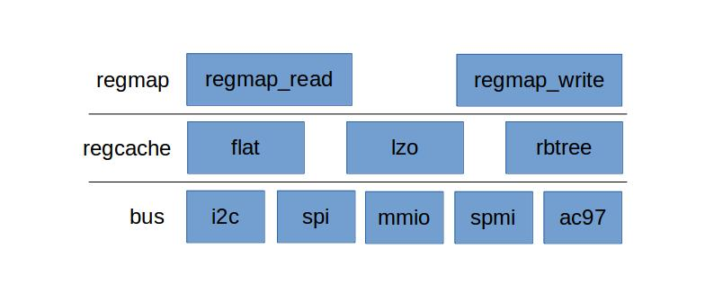

I2C¶
读写时序¶
timing
regmap i2c¶
Intro¶
Regmap主要目的是减少慢速I/O驱动上的重复逻辑,提供一种通用的接口来操作底层硬件上的寄存器.Regmap除了能做到统一的I/O接口,还可以在驱动和硬件IC之间做一层缓存,从而能减少底层I/O的操作次数
Regmap拓扑结构
regmap
应用实例¶
以rk808驱动为例子讲解i2c regmap方式读写
使用配置文件初始化i2c的regmap
devm_regmap_init_i2c(client, pdata->rk8xx_regmap_config);
配置文件如下
static const struct regmap_config rk808_regmap_config = {
.reg_bits = 8,
.val_bits = 8,
.max_register = RK808_IO_POL_REG,
.cache_type = REGCACHE_RBTREE,
.volatile_reg = rk808_is_volatile_reg,
};
初始化完后就可以使用regmap的API来操作I2C读写
regmap_read(chip->regmap, RK818_LDO_EN_REG, &ldo_en);
regmap_write(chip->regmap, RK818_LDO_EN_REG, 0xf7);